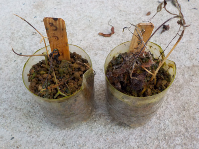
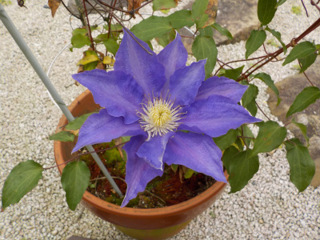
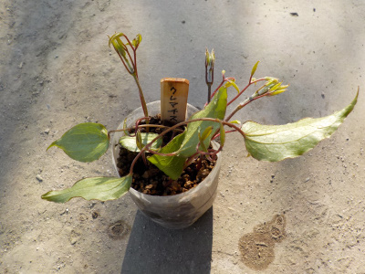
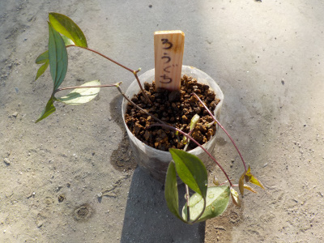
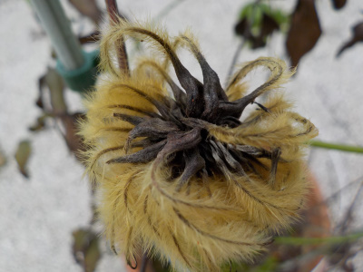
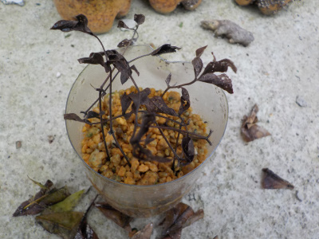
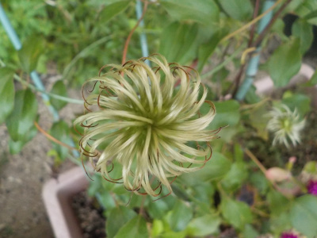
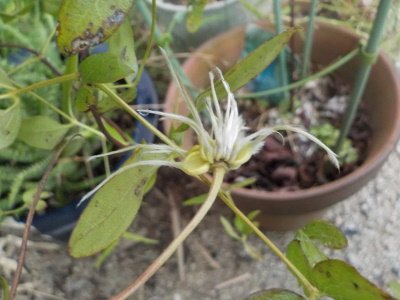
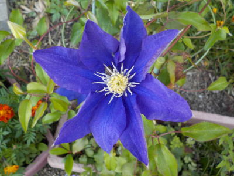
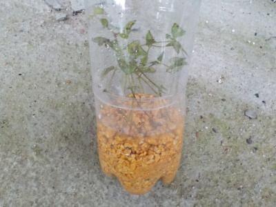

遊びで植物を育てよう
2020/06/07
クレマチスの挿し木は失敗です。

前回も失敗しているので、密閉挿しは合わないのかもしれません。
次回は普通に挿し木をしようと思います。
【クレマチスTOP】
【花TOP】
【園芸TOP】
2020/05/10
今年は母の日用ギフトでクレマチスを見なかったかも。

家のクレマチスが母の日に咲いてよかったです。
今年はショップで、クレマチスのキフトを見なかったきがする。
まあ、新型コロナがあるのであまり商品を見ていないだけかもしれないです。
【クレマチスTOP】
【花TOP】
【園芸TOP】
2020/04/25
クレマチスの挿し木をしました。

前に挿し木した時も成功しているので、たぶん大丈夫。

クレマチスの篭口は以前失敗しているので、ちょっと不安です。
増えたら庭に地植えしようと思っています。
【クレマチスTOP】
【花TOP】
【園芸TOP】
2019/11/02
スポンジ挿し木の途中経過

一本だけ葉っぱが青いです。
後は枯れましたね。
【クレマチスTOP】
【花TOP】
【園芸TOP】
2019/10/27
クレマチスの種ができたかな？
茶色いふさふさが出来ました。

なんか汚い。枯れた感じがします。
このまま放置したら、この鉢の中に種が落ちてそのうち芽が出て育ったりしないかな。
この鉢って複数本生えてるので、既に育ってたりして。
【クレマチスTOP】
【花TOP】
【園芸TOP】
2019/10/20
1週間前にクレマチスの水挿しをしました。
秋なので既に葉っぱは傷んでます。

根っこが出るのと枯れるのと、どっちが早いかな。
【クレマチスTOP】
【花TOP】
【園芸TOP】
2019/09/23
クレマチスのペットボトル挿し木は失敗しました。
クレマチスは挿し木できるはずなんだけど失敗です。

なぜでしょう。
何か間違ったかな？
【クレマチスTOP】
【花TOP】
【園芸TOP】
2019/08/08
クレマチスの篭口の種があまりできません。
篭口の種が大きくなりません。

一般的なクレマチスはくるくるとした大きいのが何個が出来ています。

篭口の種で大きく育っているのはこれ一つだけ。
種もちょっとだけです。
こんなものかな？
種を育ててみたいって思っているんですが、数が少ないとやる気がでないな。
【クレマチスTOP】
【花TOP】
【園芸TOP】
2019/07/15
クレマチスが2回目の開花シーズンです。
今年は2回目も沢山咲きそうです。

1回目よりも小さいです。色は濃いかな。
【クレマチスTOP】
【花TOP】
【園芸TOP】
2019/06/30
ペットボトルでクレマチスの挿し木。
水やり軽減で挿し木です。

何本成功するかな。
【クレマチスTOP】
【花TOP】
【園芸TOP】
畑仕事じゃないよ。
【おいしいものを食べよう。】【しっかり寝よう。】
【ソロ活をしよう!】【季節感のあることをしよう。】【動画視聴はほどほどに。】【当サイトの全てのコンテンツは無断転載禁止です。】